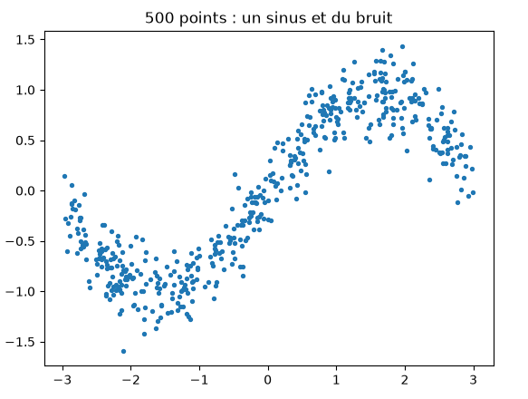
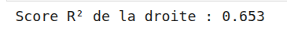
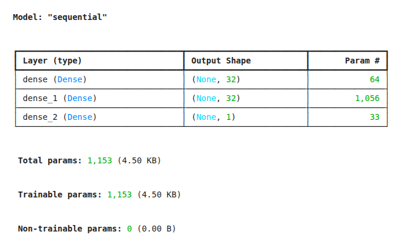
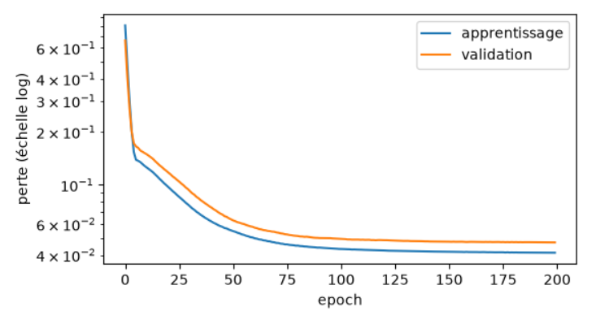
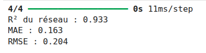
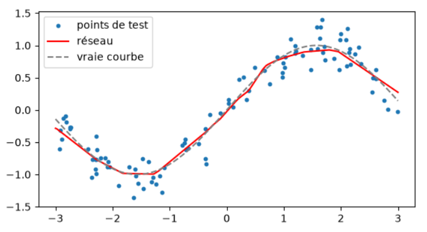

Cours : Prédire un nombre — La régression avec un réseau de neurones
1. Introduction : Qu'est-ce que la régression ?
En Machine Learning et en Deep Learning, on distingue deux grandes familles de tâches supervisées :
- La classification : Prédire une catégorie, une classe (ex: Est-ce un chat ou un chien ?, Spam ou non ?).
- La régression : Prédire une valeur continue, c'est-à-dire un nombre (ex: Prédire un prix immobilier, Estimer une température, ou ici, prédire la hauteur
yd'une courbe à partir de sa positionx).
2. Étape 1 & 2 — La préparation des données : Non-linéarité et Découpage
Pour bien comprendre pourquoi les réseaux de neurones sont puissants, on commence par générer des données synthétiques qui ne suivent pas une simple ligne droite, mais une fonction sinusoïdale bruitée.
Génération et visualisation
import numpy as np
import matplotlib.pyplot as plt
# Fixer la graine aléatoire pour la reproductibilité
rng = np.random.default_rng(42)
# Génération des positions x et des hauteurs y (un sinus + du bruit)
x = rng.uniform(-3, 3, 500)
y = np.sin(x) + rng.normal(0, 0.2, 500)
plt.scatter(x, y, s=8)
plt.title("500 points : un sinus et du bruit")
plt.show()

Le découpage (Train / Test) et le remodelage (Reshape)
Avant de nourrir un modèle Keras, deux actions indispensables sont menées :
- Le passage à 2 dimensions (Le
reshape) : -
Éclairage théorique : Keras et TensorFlow attendent systématiquement des entrées sous forme de matrice (lignes, colonnes) de type
(batch_size, features). Notre vecteurxd'origine est un simple tableau 1D de taille(500,). On le transforme en une colonne unique de forme(500, 1)grâce àreshape(-1, 1). Même si nous n'avons qu'une seule variable en entrée, le réseau a besoin de cette structure matricielle pour effectuer ses multiplications de poids. -
Le découpage (Train / Test) :
- On met 20 % des données de côté (
x_test,y_test). Le réseau ne les verra jamais pendant son apprentissage ; elles serviront de verdict final pour évaluer sa capacité de généralisation sur des situations inédites.
from sklearn.model_selection import train_test_split
# Remodelage pour obtenir un tableau à 2 dimensions (500 lignes, 1 colonne)
x = x.reshape(-1, 1)
# Découpage : 80% pour l'entraînement, 20% pour le test
x_train, x_test, y_train, y_test = train_test_split(x, y, test_size=0.2, random_state=42)
3. Étape 3 — La référence (Baseline) : La régression linéaire
En IA, avant de construire une architecture complexe (comme un réseau de neurones profond), il est impératif de tester une méthode simple pour établir une référence (une baseline). Si un réseau complexe fait moins bien ou à peine mieux qu'une droite, c'est qu'il y a un problème !
- Le score R² (Coefficient de détermination) : Il mesure la part de variance expliquée par le modèle.
- \(R^2 = 1\) : Prédiction parfaite.
- \(R^2 = 0\) : Le modèle n'est pas mieux que de prédire systématiquement la moyenne des valeurs.
- \(R^2 < 0\) : Le modèle est pire que tout prédire à la moyenne.
from sklearn.linear_model import LinearRegression
from sklearn.metrics import r2_score
# Initialisation et entraînement de la régression linéaire
modele_lineaire = LinearRegression()
modele_lineaire.fit(x_train, y_train)
# Prédiction et évaluation sur le jeu de test
y_pred_lineaire = modele_lineaire.predict(x_test)
r2_lineaire = r2_score(y_test, y_pred_lineaire)
print("Score R² de la droite :", round(r2_lineaire, 3))

Observation pédagogique : Une droite ne pouvant pas courber son tracé, elle s'arrête à un score \(R^2\) modéré (autour de \(0.65\)). Elle souffre de sous-apprentissage structurel face à la forme en vague d'un sinus.
4. Étape 4 & 5 — Conception et entraînement du Réseau de Neurones
Les spécificités d'un réseau de régression
Contrairement à la classification binaire (où la dernière couche utilise une fonction d'activation sigmoid pour forcer la sortie entre 0 et 1) :
1. Pas d'activation sur la dernière couche : La couche de sortie comporte un seul neurone sans fonction d'activation, car elle doit pouvoir prédire n'importe quel nombre réel (positif ou négatif).
2. La fonction de perte (Loss) : La MSE (Mean Squared Error) :
* Éclairage théorique : On calcule la moyenne des carrés des écarts entre les valeurs réelles et les prédictions. Élever au carré pénalise très fortement les grosses erreurs, poussant le réseau à se corriger rapidement.
3. La métrique : La MAE (Mean Absolute Error) :
* Contrairement à la MSE, la MAE mesure l'erreur absolue moyenne (sans mise au carré), ce qui est beaucoup plus intuitif à interpréter directement dans l'unité de la variable cible y.
L'arme secrète : La fonction d'activation ReLU
Dans les couches cachées, l'utilisation de activation="relu" (Rectified Linear Unit, \(f(x) = \max(0, x)\)) est fondamentale. C'est elle qui casse la linéarité : en combinant des morceaux de droites, le réseau parvient à "sculpter" une courbe capable d'épouser le signal sinusoïdal.
Construction du modèle dans Keras
from tensorflow import keras
from tensorflow.keras import layers
keras.utils.set_random_seed(42)
# Définition de l'architecture séquentielle
modele = keras.Sequential([
layers.Input(shape=(1,)), # 1 seule caractéristique en entrée (x)
layers.Dense(32, activation="relu"), # 1ère couche cachée de 32 neurones (non-linéarité ReLU)
layers.Dense(32, activation="relu"), # 2ème couche cachée de 32 neurones
layers.Dense(1) # Couche de sortie : 1 seul neurone, SANS activation
])
# Compilation du modèle
modele.compile(
optimizer="adam", # Optimiseur adaptatif ultra-performant
loss="mse", # Perte adaptée à la régression
metrics=["mae"] # Suivi de l'erreur absolue moyenne
)
modele.summary()

Note sur l'optimiseur Adam : On peut voir l'optimiseur comme un randonneur les yeux bandés qui cherche à descendre au fond d'une vallée pour trouver l'erreur minimale. Adam ajuste dynamiquement la taille de ses pas pour éviter de stagner ou de rater la zone optimale.
L'entraînement (model.fit)
Durant l'entraînement, on définit des epochs (passages complets sur le dataset). Le paramètre validation_split=0.2 met automatiquement 20 % des données d'entraînement de côté à chaque epoch pour surveiller le comportement du modèle sur des données qu'il n'utilise pas pour ajuster ses poids.
histoire = modele.fit(
x_train, y_train,
epochs=200,
batch_size=32,
validation_split=0.2,
verbose=0 # Masque les affichages superflus par epoch
)
print("Entraînement terminé avec succès !")
5. Étape 6 — Analyse de la courbe de perte (Loss)
Il est crucial de tracer l'évolution de la perte au fil des epochs (en échelle logarithmique pour mieux observer la décroissance) à la fois sur les données d'entraînement et de validation.
plt.figure(figsize=(6, 3.2))
plt.plot(histoire.history["loss"], label="apprentissage")
plt.plot(histoire.history["val_loss"], label="validation")
plt.yscale("log")
plt.xlabel("epoch")
plt.ylabel("perte (échelle log)")
plt.legend()
plt.show()

- Analyse critique : La courbe de validation (orange) suit fidèlement la courbe d'apprentissage et se stabilise généralement autour des epochs 100 à 125. Pousser jusqu'à 200 epochs n'était mathématiquement plus nécessaire, le modèle ayant atteint sa convergence.
6. Étape 7 & 8 — Évaluation finale et Visualisation
Une fois l'entraînement terminé, on évalue la performance globale sur le jeu de test, en combinant plusieurs indicateurs complémentaires :
from sklearn.metrics import mean_absolute_error
# Prédictions sur le test (on aplatit le tableau avec .ravel())
y_pred = modele.predict(x_test).ravel()
r2_reseau = r2_score(y_test, y_pred)
mae = mean_absolute_error(y_test, y_pred)
rmse = np.sqrt(np.mean((y_test - y_pred) ** 2))
print(f"R² du réseau : {r2_reseau:.3f}")
print(f"MAE : {mae:.3f}")
print(f"RMSE : {rmse:.3f}")

- Résultat typique : Le score \(R^2\) grimpe au-delà de \(0.93\), écrasant largement la performance de la simple droite (\(0.65\)). Le réseau a réussi à épouser la forme sinusoïdale grâce aux fonctions d'activation non-linéaires (
relu) de ses couches cachées.
Visualisation finale : Le réseau vs La réalité
xs = np.linspace(-3, 3, 300).reshape(-1, 1)
plt.figure(figsize=(6.5, 3.4))
plt.scatter(x_test, y_test, s=10, label="points de test")
plt.plot(xs, modele.predict(xs, verbose=0), color="red", label="réseau")
plt.plot(xs, np.sin(xs), "--", color="gray", label="vraie courbe (sans bruit)")
plt.legend()
plt.show()

7. Conclusion & Mot de la fin
Ce TP illustre à merveille le changement de paradigme entre les statistiques traditionnelles et le Deep Learning :
- De la ligne globale au sur-mesure local : Alors qu'une régression linéaire cherche une contrainte globale rigide (une droite), le réseau de neurones combine des fonctions non-linéaires pour modeler une courbe au plus près de la complexité des données réelles.
- Le piège de la complexité (Overfitting) : Si l'on avait donné une architecture démesurée (ex: des centaines de neurones) à ce petit jeu de données bruité, le réseau aurait pu faire du sur-apprentissage (apprendre le bruit aléatoire par cœur au lieu de capter la tendance générale du sinus). Tout l'art du Deep Learning réside dans cet équilibre subtil entre la capacité du modèle et la quantité/qualité des données disponibles.